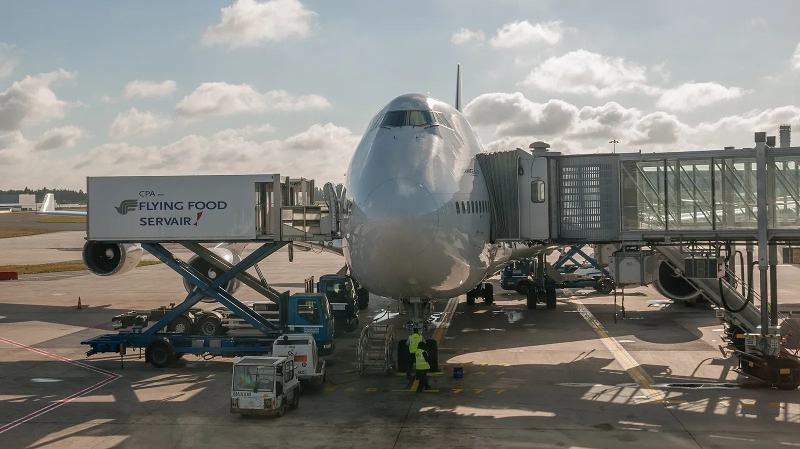
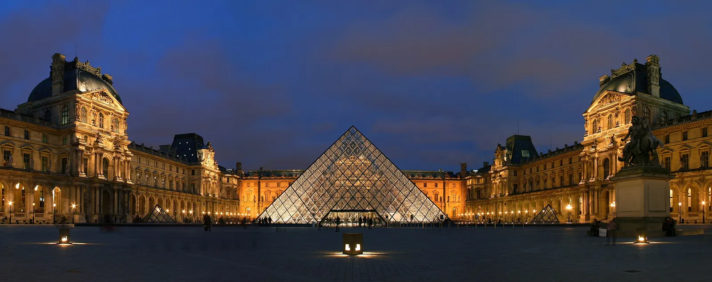
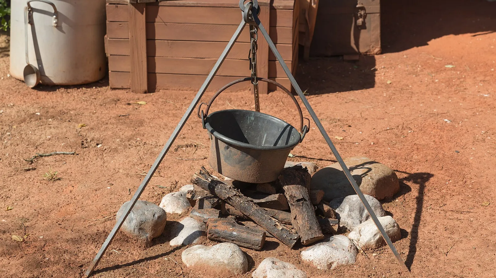
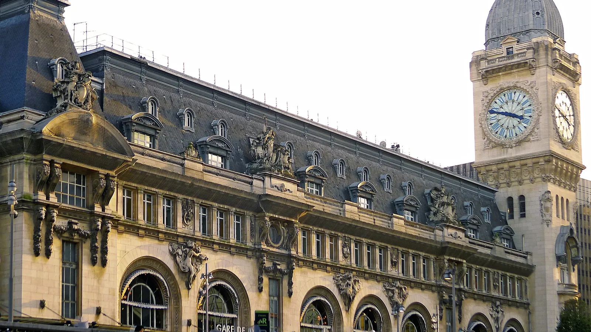
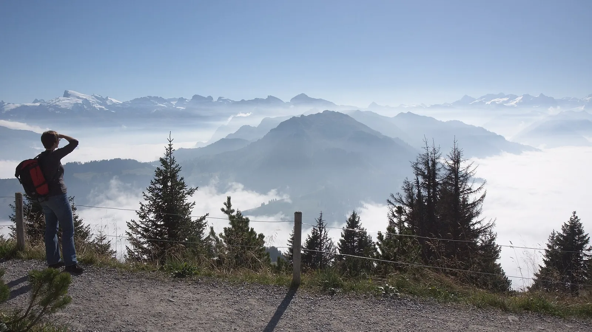
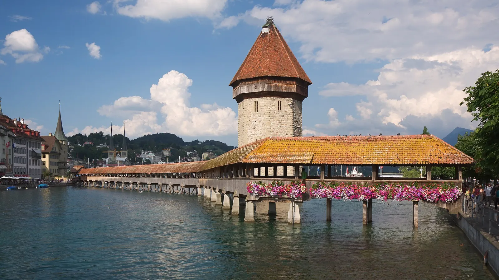
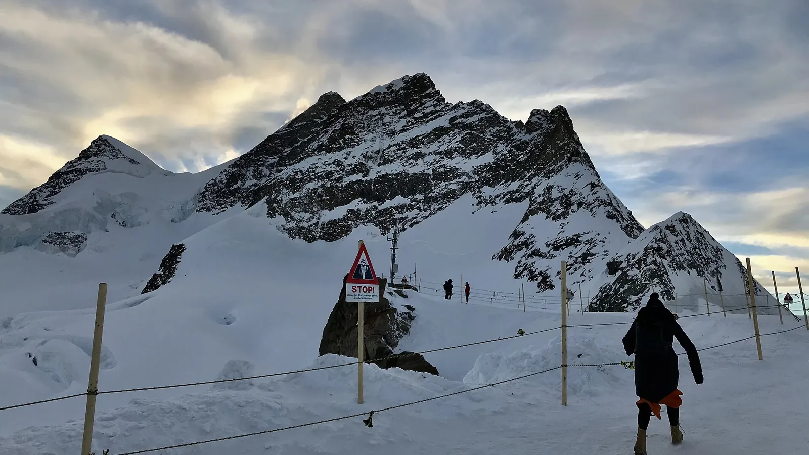
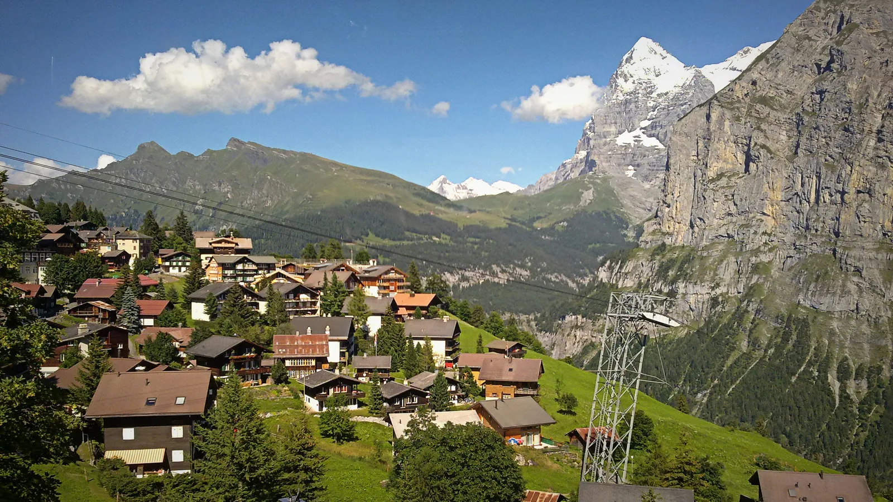
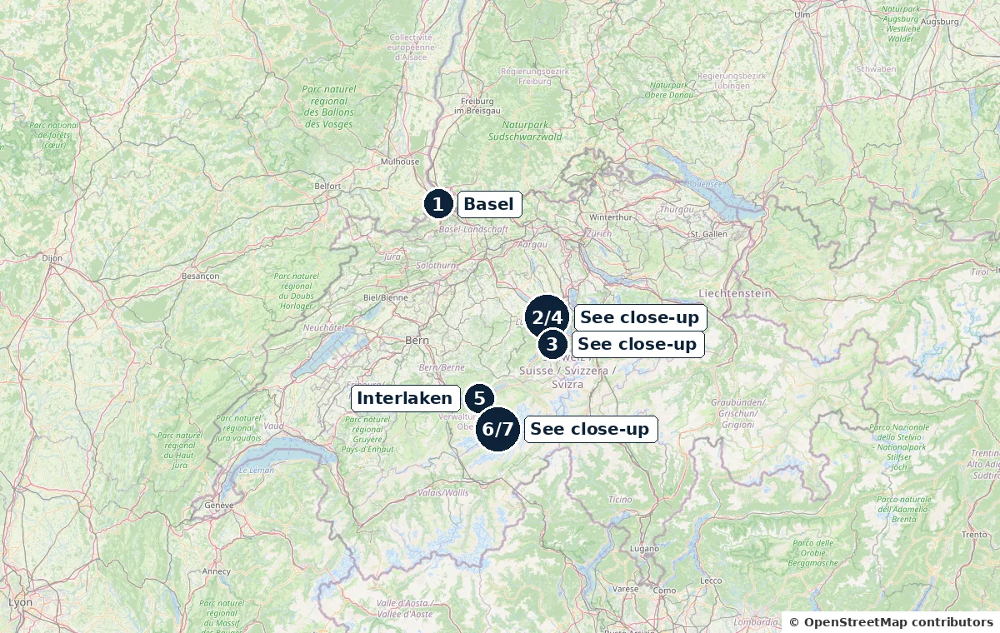

A first trip to Europe that balances a great city with the mountains. Three nights in Paris with the Eiffel Tower, a Seine cruise, an evening cabaret and a day at Disneyland, then the high-speed train to Switzerland for Lucerne, Mount Pilatus and the Stanserhorn, and three nights in Interlaken for the Jungfraujoch and the Schilthorn. Two changes to the original plan: the Lido revue in Paris closed in 2022, so we book another classic cabaret; and we take the TGV Lyria from Paris to Switzerland (about 4 hours city centre to city centre) instead of a flight, which saves the airport time.
See it for yourself
Photos from the journey









Where you go
The journey on one map

ParisDisneyland ParisBaselLucerneStanserhornPilatusInterlakenJungfraujochSchilthornZurich Airport
Day by day, in short
Daily travel brief
Distances are by road for the whole day. The full plan with timings comes with your detailed itinerary.
-
1
Arrive in Paris, and Paris by night
- Cabaret show: smart dress; no shorts or trainers.
- Cabaret show: shows start at about 21:00 and 23:00; the early show suits a long travel day.
-
2
The Eiffel Tower, the Arc de Triomphe and a Seine cruise
- Eiffel Tower, second floor: arrive 15 minutes before your slot for the security check.
- Eiffel Tower, second floor: pickpockets work the queues and the Trocadéro.
-
3
Disneyland Paris
- Disneyland Park and Walt Disney Studios: stay for the evening show at the castle, then take the train back.
- Vegetarian options are marked on the Disneyland app's menus.
-
4
-
5
Stanserhorn and Mount Pilatus
- Stanserhorn CabriO: runs from about April to November.
- Mount Pilatus: the cogwheel railway runs from about May to November.
-
6
Lucerne at leisure, then Interlaken
- Book tomorrow's Jungfraujoch seat reservation if not yet done.
-
7
Jungfraujoch, Top of Europe
- Train and Eiger Express to the Jungfraujoch: walk slowly at altitude; headaches are common.
- Train and Eiger Express to the Jungfraujoch: warm jacket, gloves and sunglasses.
-
8
Mürren, the Schilthorn and Trümmelbach Falls
- Wear a rain jacket at Trümmelbach: the spray is heavy.
-
9
Train to Zurich Airport
- Train to Zurich Airport: be at the airport 3 hours before an international flight.
- Swiss chocolate goes in checked baggage.
Local know-how
Travel hacks from our desk
Hotel deposit
Use a credit card for the deposit or pre-authorisation at check-in, never a forex or debit card. Forex cards cannot hold funds, many hotels refuse them, and a credit-card hold is released faster.
Cards and cash
On card machines, always choose to pay in euros in France and Swiss francs in Switzerland, never in INR. Cards work almost everywhere; keep a little cash in each currency.
Pickpockets
Busy stations, trams and squares are pickpocket hotspots. Keep passports in the hotel safe, carry a copy, and wear your bag in front in crowds.
Plugs, water and meal times
Plugs are the two round-pin type C and F at 230 volts (Switzerland uses type J; a type C plug fits). Tap water is safe to drink. Lunch is about 12:00 to 14:00 and dinner from about 18:30.
When to go
Best time to visit for this journey
June or September.
May to September for the mountains; Paris is lovely in May, June and September.
The package
What's included
Included
- 8 nights with breakfast
- Airport transfer in Paris
- Paris hop-on hop-off bus with Seine cruise
- Eiffel Tower second-floor timed tickets
- Cabaret show tickets
- Disneyland Paris 1-day tickets
- TGV Lyria Paris to Basel
- 6-day Swiss Travel Pass
- Jungfraujoch, Schilthorn and Pilatus excursions
- 24/7 support from Blue Diamond Voyage
Not included
- International flights
- Schengen visa
- Lunches and dinners except the lake cruise
- Travel insurance
- City taxes
The detailed itinerary
Some journeys are planned. Ours are crafted.
The full 9-day plan is ready: hour-by-hour timings, drive times, temple dress codes, food for your diet and a route map for every day. Tell us your dates and your city, and we'll send it to you on WhatsApp, shaped around you.
- Hour-by-hour timings
- A route map for every day
- Hotel and room details
- Visa and entry steps
- Vegetarian and Jain dining
24/7 travel desk+91 97148 59797+91 98242 21400
Photo and map credits
- Charles de Gaulle Airport: Wilfredor, CC BY-SA 3.0, via Wikimedia Commons
- Louvre Museum: Benh LIEU SONG, CC BY 2.5, via Wikimedia Commons
- Disneyland Paris: Another one of my pictures: This photograph was taken by Medium69 (William Croch, CC BY-SA 4.0, via Wikimedia Commons
- Gare de Lyon: Mbzt, CC BY-SA 3.0, via Wikimedia Commons
- Stanserhorn: Ikiwaner, CC BY-SA 3.0, via Wikimedia Commons
- Chapel Bridge: Ikiwaner, CC BY-SA 3.0, via Wikimedia Commons
- Jungfraujoch: Ank Kumar, CC BY-SA 4.0, via Wikimedia Commons
- Mürren: Cristo Vlahos, CC BY-SA 3.0, via Wikimedia Commons
- Interlaken Ost: [Tycho] talk, CC BY 3.0, via Wikimedia Commons
- Maps: © OpenStreetMap contributors; road routes by OSRM.